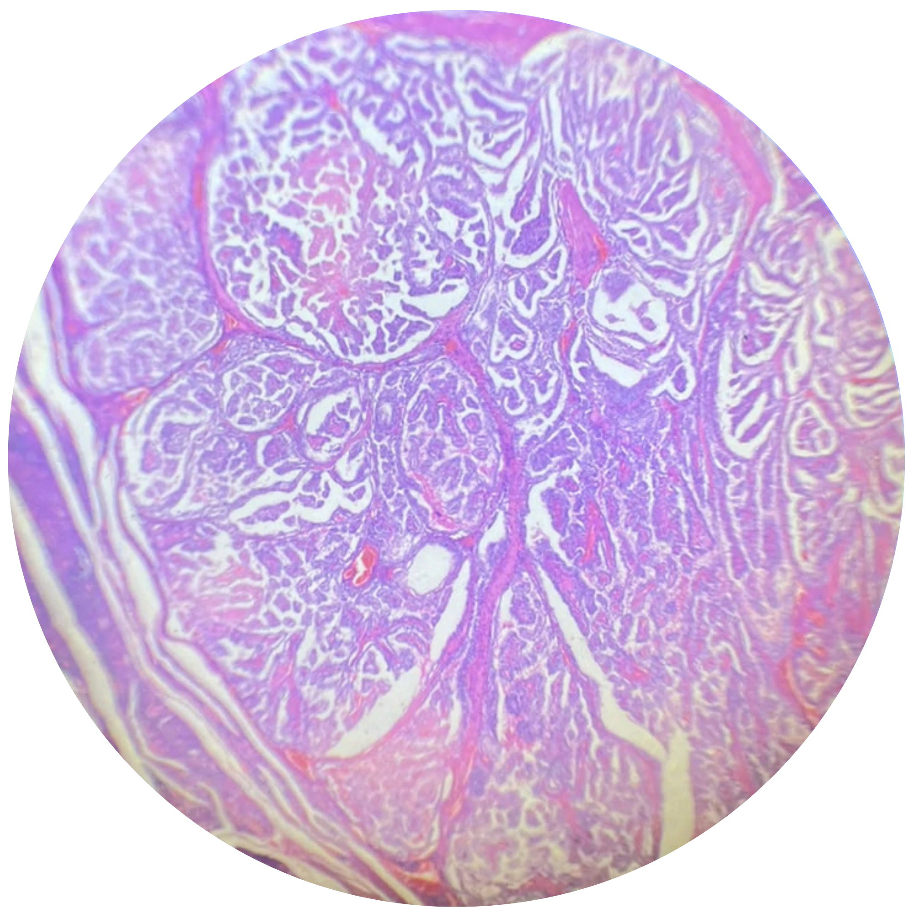

LABORATORIO DIGITAL · ANATOMÍA PATOLÓGICA
El diagnóstico empieza con una mirada.
Tu atlas de histopatología, preparado para reconocer estructuras, entrenar el ojo clínico y repasar cada lámina antes del examen.
25patologías
116microfotografías
03colecciones
ATLAS HISTOPATOLÓGICODISPONIBLE

Observa · Identifica · Aprende
Imágenes reales organizadas por patología
TU BIBLIOTECA DE ESTUDIO
Elegí tu colección
Todo el contenido del Laminário 6F, en un solo lugar.
¿Listo para poner a prueba tu diagnóstico?
Entrá a cualquier colección y activá el modo desafío para ocultar el diagnóstico y revelarlo cuando quieras.